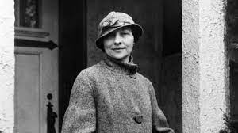
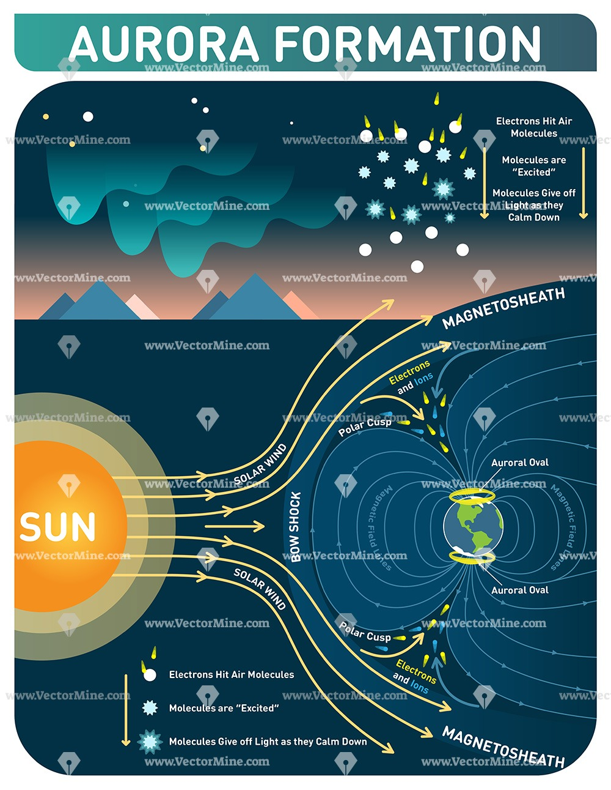

Maya Johnson / July 19th, 2022
Elizabeth Friedman was a cryptanalyst who deciphered codes in both World War 1 and 2. She was born on August 26th, 1892. She attended Wooster college in Ohio and graduated from Hillsdale college in Michigan. She then went on to become a cryptologist and code breaker. Friedman was hired by the U.S coast guard, and started the first code breaking unit and through this she was able to crack around 12,000 encryptions. In the 1940s she eavesdropped on German spies and she along with a team of others were able to break enigma codes. Her determination throughout her career was groundbreaking, and paved the way for multitudes of women in STEM in the future. https://teachablemachine.withgoogle.com/models/[...]
Maya Johnson / July 19th, 2022
During the teachable machines lesson I worked with Kate and Gia. We used facial recognition technology to make a program for teachers that would detect if their students are paying attention during class. We created three different scenarios, writing notes, zoning out, and on a phone. We had to take close to 800 photos of each of us per scenario. Taking this many photos allowed us to get the most accurate results, as each photo gave the computer a different perspective. This lesson gave us a great insight into AI and how it will be used in various ways in the future as every group created a unique program. I believe that in the future Ai will be used in educational settings. For example, in the future robots could be teachers, this could be helpful with the current shortage of teachers and if perfected it would be a life changing tool.
Maya Johnson / July 20th, 2022
During the scavenger hunt I was partnered with Maddie and Mary, we were able to visit departments around the campus and see how they used IT throughout their jobs. On our hunt we were able to visit the Provost Office. The Provost has a role corresponding to a vice president of the University. She oversees the department chairs along with the admission decision making. She was able to give us some great advice on how to be successful in our futures. This was my favorite interview because I was able to learn so much about the university as well as some personal tips for the future.
Maya Johnson / July 20th, 2022
The video below is a tutorial crash course video on how to use HTML that includes a bunch of tips for beginngers who are seeking to learn HTML.
Maya Johnson / July 21th, 2022
Today in class we were able to learn about citizen science and how individuals similar to me contribute to scientific research across the globe. After the presentation we were able to deep dive into a Citizen Science Project that interested us. My group researched a project called the Aurora Zoo. This project is important because there is not yet a full understanding of how energy is transferred from space into the atmosphere. This project has also been able to give scientists an important understanding of fragmented aurora-like emissions (FAEs). Researching about this project has allowed us to learn more about several topics that include space, electricity, and light. 
Maya Johnson / July 22th, 2022
Cyber security is protecting networks from unauthorized attacks to make sure that the confidentiality is secured. Cyberseciurty is important because it keeps people safe from online threats. The field of cyber security is also evolving because hackers are continuously looking for ways to get people's information. Therefore this field has a wide range of opportunities for people looking to join Cyber. I thought that this presentation was very informative and interesting.
Maya Johnson / July 25th, 2022
Today we learned how to use google in the most efficient ways along with how to identify biases that we have. In the morning three librarians came in and taught us some cool tips on how to use hidden resources that google has. After lunch we learned about biases and we played a couple of games about people developing biases and how we can combat this. I found the bias game very informative as throughout the game people were about to see some of the biases that they have and it gave everyone a new perspective.